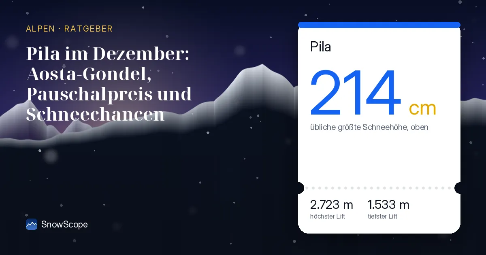
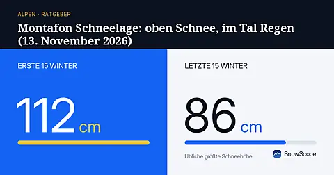

Pila im Dezember: Aosta-Gondel, Pauschalpreis und Schneechancen
Pila liegt direkt über Aosta und ist mit der Gondel aus der Stadt erreichbar. Der Schnee im Dezember hängt hier von der Höhe ab. Die unteren Pisten bei 1.533 m können Anfang des Monats dünn sein, während die Pisten bei 2.723 m im Schnitt 80 cm haben. Mit einem Tagesskipass für 60,00 EUR die ganze Saison über ist die Wochenendplanung einfach.
Die Live-Schneeprognose für Pila in der SnowScope-AppSchneehöhen, Pulverschnee-Alarme und 3D-Karte, gratis.
Von Aosta auf die Piste
Als Wochenendfahrer kannst du in Aosta halten und direkt mit der Gondel nach Pila fahren. Das Skigebiet umfasst 56 km präparierte Pisten und 16 Lifte, die von 1.533 m an der Talstation bis auf 2.723 m am Gipfel führen, was 1.190 m Höhenunterschied ergibt.
Heute, am 13. November 2026, zeigen die Schneeschätzungen einen frühen Start: 0 cm an der Basis (1.533 m), 4 cm am Berg (2.128 m) und 14 cm am Gipfel (2.723 m). Für die nächsten sieben Tage werden 26 cm Neuschnee an der Basis, 53 cm am Berg und 70 cm am Gipfel erwartet. Die Zwei-Wochen-Prognose für die mittlere Lage und darüber vom 13. bis 26. November liegt zwischen 52 und 74 cm.

Ein Preis für den ganzen Winter
Auf der offiziellen Website kostet ein 1-Tages-Skipass für Erwachsene die ganze Saison über 60,00 EUR, vom 28. November 2026 bis zum 11. April 2027. Du musst nicht nach günstigen Terminen suchen, um hohe Wochenendpreise zu vermeiden.
Für längere Aufenthalte kostet ein 6-Tages-Pass für Erwachsene im Winter 2026-27 322,00 EUR. Ein fester Tagessatz macht die Budgetplanung für ein Dezember-Wochenende vor der Abreise einfach.
Schneechancen nach Höhe
In unserer Schnee-Historie von 46 vergangenen Wintern (1980-81 bis 2025-26) ist die Talstation (1.533 m) im Dezember oft schneearm. Sie hat im Durchschnitt 34 cm in einem normalen Dezember (16 cm in einem schneearmen Winter, 60 cm in einem schneereichen) und erreicht 30 cm oder mehr in 41 %, 52 %, 59 % und 78 % der vergangenen Winter über die vier Dezemberwochen, mit 50 cm oder mehr in nur 9 %, 15 %, 26 % und 30 % der vergangenen Winter.
Die mittlere Lage (2.128 m) hat im Schnitt 45 cm (21 cm schneearm, 78 cm schneereich) und erreicht 30 cm oder mehr in 50 %, 76 %, 85 % und 89 % der vergangenen Winter sowie 50 cm oder mehr in 26 %, 33 %, 41 % und 59 % der vergangenen Winter. Der Gipfel (2.723 m) hat im Schnitt 80 cm (37 cm schneearm, 138 cm schneereich) und erreicht 30 cm oder mehr in 87 %, 93 %, 98 % und 98 % der vergangenen Winter sowie 50 cm oder mehr in 57 %, 78 %, 89 % und 89 % der vergangenen Winter. Für eine sichere Schneedecke solltest du ab Mitte Dezember planen und von der mittleren Lage bis zum Gipfel fahren.
Pila im Vergleich mit La Thuile
La Thuile (Frankreich / Italien) hat ein größeres Skigebiet mit 79 km Pisten und 17 Liften zwischen 1.468 m und 2.608 m, ein Höhenunterschied von 1.140 m. In unserer Schnee-Historie sind die Dezember-Durchschnittswerte dort höher: 44 cm an der Basis (1.468 m, 17 cm schneearm, 92 cm schneereich) und 67 cm in der mittleren Lage (2.038 m, 31 cm schneearm, 129 cm schneereich), wo 30 cm oder mehr in 78 %, 91 %, 100 % und 100 % der vergangenen Winter erreicht werden.
Am Gipfel (2.608 m) hat La Thuile im Schnitt 98 cm (47 cm schneearm, 173 cm schneereich) und erreicht 50 cm oder mehr in 76 %, 85 %, 93 % und 98 % der vergangenen Winter über die vier Dezemberwochen, neben 48 %, 67 %, 76 % und 87 % der vergangenen Winter für 30 cm oder mehr an der Basis. La Thuile bietet bessere Schneechancen im Dezember, obwohl wir die Skipasspreise auf der offiziellen Website nicht geprüft haben.
Trends über 46 vergangene Winter
Zwischen den ersten 15 Wintern (1980-81 bis 1994-95) und den letzten 15 Wintern (2011-12 bis 2025-26) ist der durchschnittliche Schneestand von Pila Mitte Dezember leicht gestiegen: von 31 cm auf 36 cm an der Basis, von 42 cm auf 49 cm in der mittleren Lage und von 74 cm auf 84 cm am Gipfel.
Einzelne Winter schwanken stark. Der letzte Winter (2025-26) hatte im Schnitt 27 cm an der Basis, 39 cm in der mittleren Lage und 74 cm am Gipfel, während der schneearmste Dezember (2015-16) auf 14 cm, 16 cm und 26 cm fiel, verglichen mit dem schneereichsten Dezember (1982-83) mit 67 cm, 88 cm und 158 cm. Dauerhafter Schnee beginnt meist um den 10. Oktober am Gipfel und den 26. Oktober an der Basis und erreicht saisonale Höchstwerte von 81 cm, 116 cm und 214 cm.
Tipps für Skifahrer
- Kaufe deinen 1-Tages-Skipass für 60,00 EUR oder den 6-Tages-Pass für 322,00 EUR auf der offiziellen Website, da der Tagessatz vom 28. November 2026 bis zum 11. April 2027 gleich bleibt.
- Ziele auf den 15.-21. oder 22.-28. Dezember für eine breitere Schneedecke, wenn die mittlere Lage (2.128 m) in 85 % und 89 % der vergangenen Winter 30 cm oder mehr erreicht.
- Bleib bei den oberen Liften in der Nähe von 2.723 m, wenn du in den ersten zwei Dezemberwochen fährst, wo in 87 % und 93 % der vergangenen Winter 30 cm oder mehr liegen.
- Prüfe den Lawinenlagebericht, bevor du abseits der Pisten fährst, besonders nach frühen Stürmen wie der 52 bis 74 cm Prognose für die mittlere Lage und darüber.
Weitere Karten (externe Seiten)
Quellen und Nachweise
- Pila, official daily ski pass prices 2026-27 pila.it/en/skipass-pila/daily-skipass/
- SnowScope, December snow at three heights and today's snow map snowscope.app/
Zu diesen Zahlen
Schneewerte: SnowScope-Schneehistorie, 46 vergangene Winter (1980-81 bis 2025-26) auf drei Höhen jedes Skigebiets (ein höhenkorrigiertes Modell der Vergangenheit: eine Schätzung für eine Fläche, keine Messungen des Skigebiets); Dezemberwerte aus den täglichen Schneehöhen dieser Winter. Aktueller Schnee und Zwei-Wochen-Ausblick: SnowScope-Prognosen (Ausblick aus ECMWF und GFS, eine Spanne, kein Versprechen). Lifte und Pisten: OpenSkiMap-Kartierung. Preise: die offiziellen Seiten unten, gelesen am 2026-11-13; Preise können sich ändern, vor der Buchung prüfen.
Offizielle Lawinenlageberichte: AINEVA – Associazione Interregionale Neve e Valanghe
Diesen Bericht zitieren
Für Forschung, Lehre oder Presse: Zahlen und Grafiken sind unter CC BY 4.0 mit dieser Quellenangabe frei nutzbar.
SnowScope (2026), Pila im Dezember: Aosta-Gondel, Pauschalpreis und Schneechancen, https://snowscope.app/blog/de/2026/11/pila-aosta-december-ski-flat-price-snow-2026.html, abgerufen am 2026-11-14
SnowScope (Atlas Labs). (2026, November 14). Pila im Dezember: Aosta-Gondel, Pauschalpreis und Schneechancen. SnowScope snow reports. https://snowscope.app/blog/de/2026/11/pila-aosta-december-ski-flat-price-snow-2026.html
BibTeX
@misc{snowscope2026pilaaostadecemberskiflat,
author = {{SnowScope (Atlas Labs)}},
title = {Pila im Dezember: Aosta-Gondel, Pauschalpreis und Schneechancen},
year = {2026},
month = nov,
howpublished = {\url{https://snowscope.app/blog/de/2026/11/pila-aosta-december-ski-flat-price-snow-2026.html}},
note = {Published 2026-11-14 13:29 UTC; accessed 2026-11-14}
}· CC BY 4.0 · Methoden, Daten und Werkzeuge →
Pila: Schnee und Temperatur nach Höhe, dieser Winter vs letzter (Werkzeuge) →
Pila folgen
Gratis: eine Nachricht, wenn Neuschnee kommt, und jeden Morgen die Vorhersage.
Weitere Schneeberichte

Die Schneehöhe in Sölden am 13. November 2026: rund 9 cm oben auf 3245 m, 5 cm an der Mittelstation, nichts im Tal auf 1346 m. Diese Woche 25 cm oben, Regen unter etwa 1620 m. Gletscher gegen Dorf, dazu 46 vergangene Winter.

Schneelage in Silvretta Montafon am 13. November 2026: 4,5 cm am Gipfel auf 2421 m, Mittelstation und Tal noch aper, diese Woche rund 40 cm in der Höhe, im Tal Regen unter 1.500 m.

Drei Arten, einen Tag ab Méribel zu verbringen: nach Osten nach Courchevel, nach Süden Richtung Val Thorens oder daheim am Mont Vallon, mit dem Schnee von 46 vergangenen Wintern auf drei Höhen.